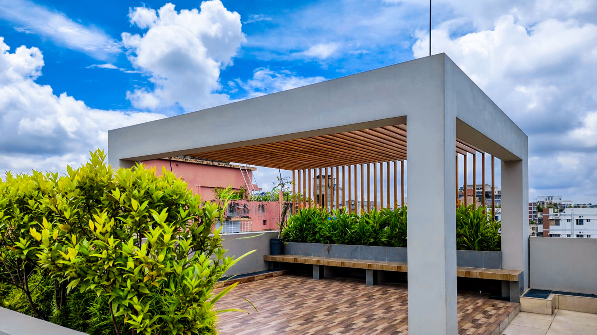
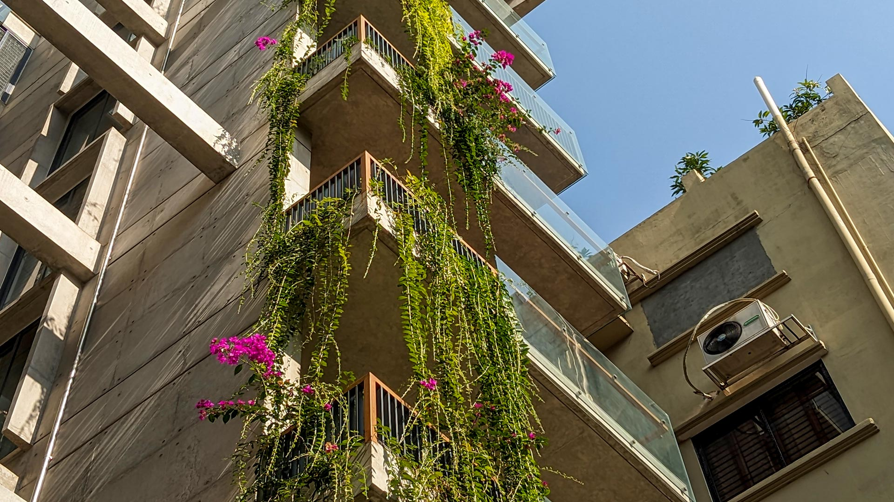
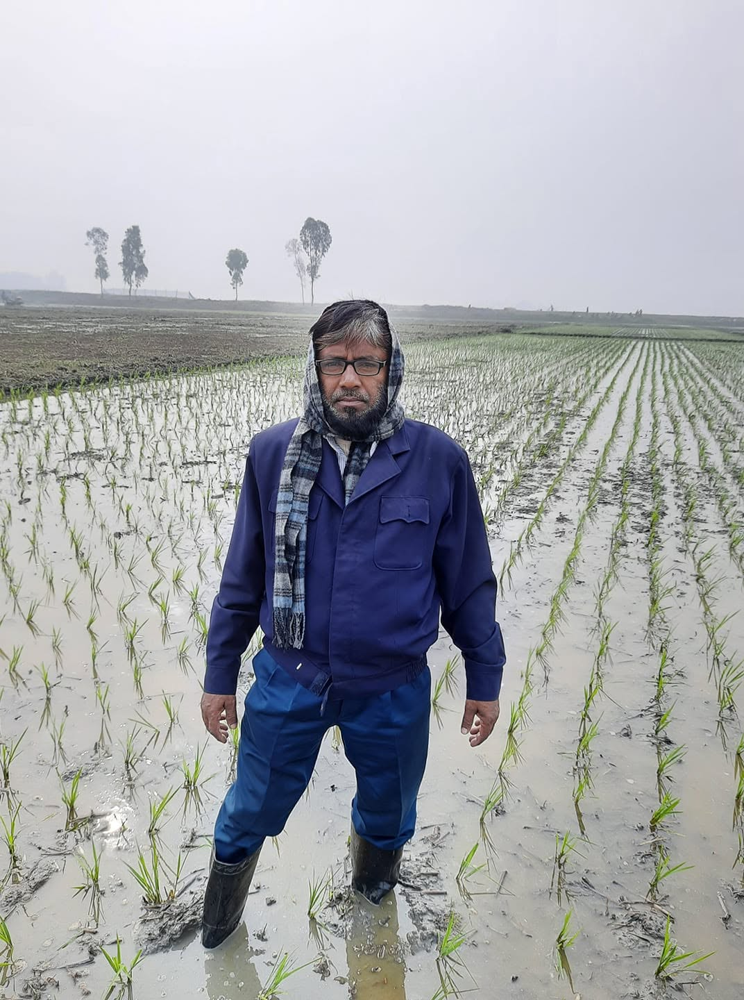
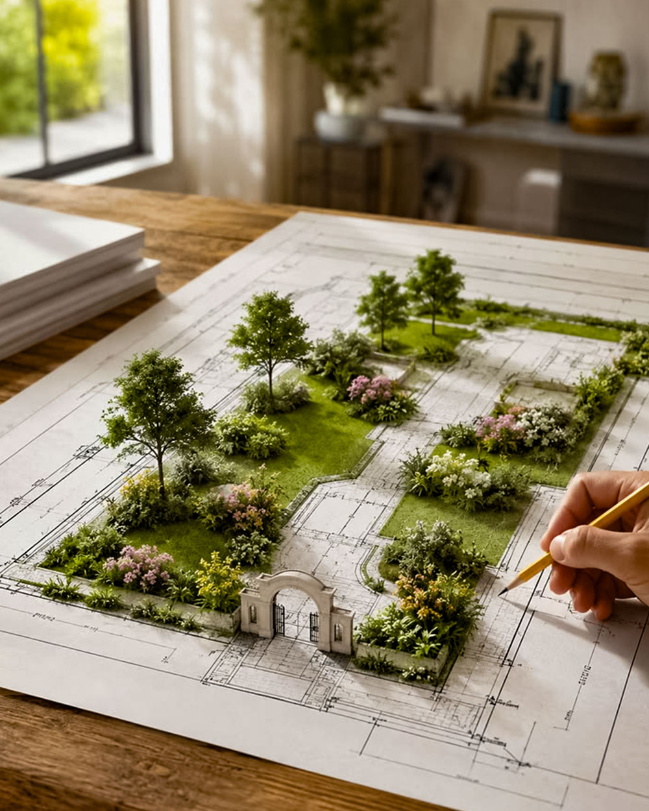

Landscape design rooted in civil & soil science.
Unlike static interiors, plants grow and weather across seasons. We pair architectural hardscaping and rooftop waterproofing with the field agronomy of our sister concern, Dhanshiri Garden (ধানসিঁড়ি গার্ডেন) — led by agronomist Mr. Amir Ali (ex-DAE).
Rooftop & Terrace Garden Engineering
Transforming concrete slabs into lush sky sanctuaries requires structural calculation. We evaluate structural dead/live loads, install multi-layer root barriers, and engineer geocomposite drainage matrices to ensure zero roof leakage and effortless runoff.
Dead load and saturated soil weight calculations to ensure planting beds never exceed building engineering thresholds.
Heavy-duty HDPE root inhibitor membranes, geocomposite dimpled drainage cells, and non-woven geotextile filter fabrics that prevent root intrusion and soil wash-out.
Selection of wind-tolerant species and architectural shade pergolas tailored to intense rooftop sun exposure.
.jpg)
.jpg)

Architectural Hardscaping, Paving & Geometry
Hardscaping anchors the landscape. We design geometric walkways, retaining planter walls, and outdoor plazas using natural stone, flamed granite, and permeable pavers that maintain crisp contrast against green turf.
Modular grid layouts with laser-leveled sub-bases, anti-slip finishes, and flexible polymeric sand joints that prevent weed growth.
Recessed aluminum and granite border edgings that create razor-sharp visual contrast between stone paths and lush Bermuda lawn.
Reinforced masonry planters clad in textural slate, travertine, or fair-face concrete with integrated concealed drain weep holes.
.jpg)
.jpg)
.jpg)
Urban Courtyards & Corporate Greening
Commercial forecourts and urban courtyards establish the first sensory impression of a corporate headquarters or luxury development. We curate biophilic sanctuaries that reduce the urban heat island effect and provide restorative outdoor seating.
Carefully selected palms, ficus, dracaenas, and low-shedding architectural specimen trees that look pristine year-round.
Bespoke hardwood benching integrated into planter boxes, positioned under natural tree canopies for all-day thermal comfort.
Concealed uplights highlighting architectural tree trunks, bollard pathway markers, and warm perimeter wall grazers.

.jpg)

Water Features & Reflection Pools
Water adds movement, acoustic serenity, and thermal cooling to physical spaces. We design minimalist geometric reflection pools, cascading stone water walls, and recirculating biological ponds that mask urban traffic noise.
UV sterilizers and concealed mechanical bio-filters that keep water crystal clear with minimal maintenance and zero stagnation.
Low-voltage submerged brass fixtures that illuminate water movement and cast rippling reflection patterns onto building facades.
Water cascade volumes engineered to provide gentle white noise, creating private acoustic conversation pockets in outdoor spaces.
.jpg)
.jpg)
.jpg)
Dhanshiri Garden ধানসিঁড়ি গার্ডেন — The Agronomic Engine.
Great landscape design fails if the plants die. That is why Innerloop Atelier operates in seamless synergy with our dedicated sister concern, Dhanshiri Garden — bringing decades of field agronomy, soil chemistry, and proprietary nursery supply directly to our architecture clients.

Former Sub-Assistant Agriculture Officer, Department of Agricultural Extension (DAE). Bringing scientific plant nutrition, soil pathology, and decades of botanical mastery to urban architecture.
Horticultural Mastery Under One Roof
Dhanshiri Garden manages our proprietary plant nursery operations located at Sultanpur, Pandit Para, Naogaon Sadar, coupled with central delivery hubs across Dhaka. We cultivate and acclimatize thousands of specimen plants, carpet grass turf varieties, and exotic ornamentals specifically tested for resilience in Bangladesh's climate.
Pathogen-free organic compost, biochar, cocopeat, and vermicompost customized to the drainage needs of each plant genus.
Bermuda, Korean, and local carpet grass establishment with laser leveling and deep root aeration.
Scheduled pruning, seasonal fertilizing, pest inspection, and plant replacement guarantees.
.jpg)
.jpg)

From Sunlight Sun-Path to Mature Living Garden.
Every landscape project follows a strict architectural and agronomic roadmap.
Sun-Path & Drainage Audit
Analysis of shadow hours, seasonal rain runoff, water sources, and structural load allowances.
Landscape Masterplan & 3D
Proportioned hardscape drawings, stone paving layouts, and botanical species schedules.
Civil & MEP Engineering
Waterproofing membranes, dimpled drainage cells, irrigation piping, and low-voltage lighting conduits.
Nursery Sourcing & Planting
Acclimatized plants delivered directly from Dhanshiri Garden nursery and planted in fortified organic soil media.
Establishment & Retainer Care
Root establishment monitoring, automated irrigation calibration, and seasonal agronomy care.
Bring Us Your Landscape & Living Brief.
From lush rooftop sanctuaries and corporate courtyards to geometric hardscaping and ongoing plant care with Dhanshiri Garden — Innerloop delivers living beauty.